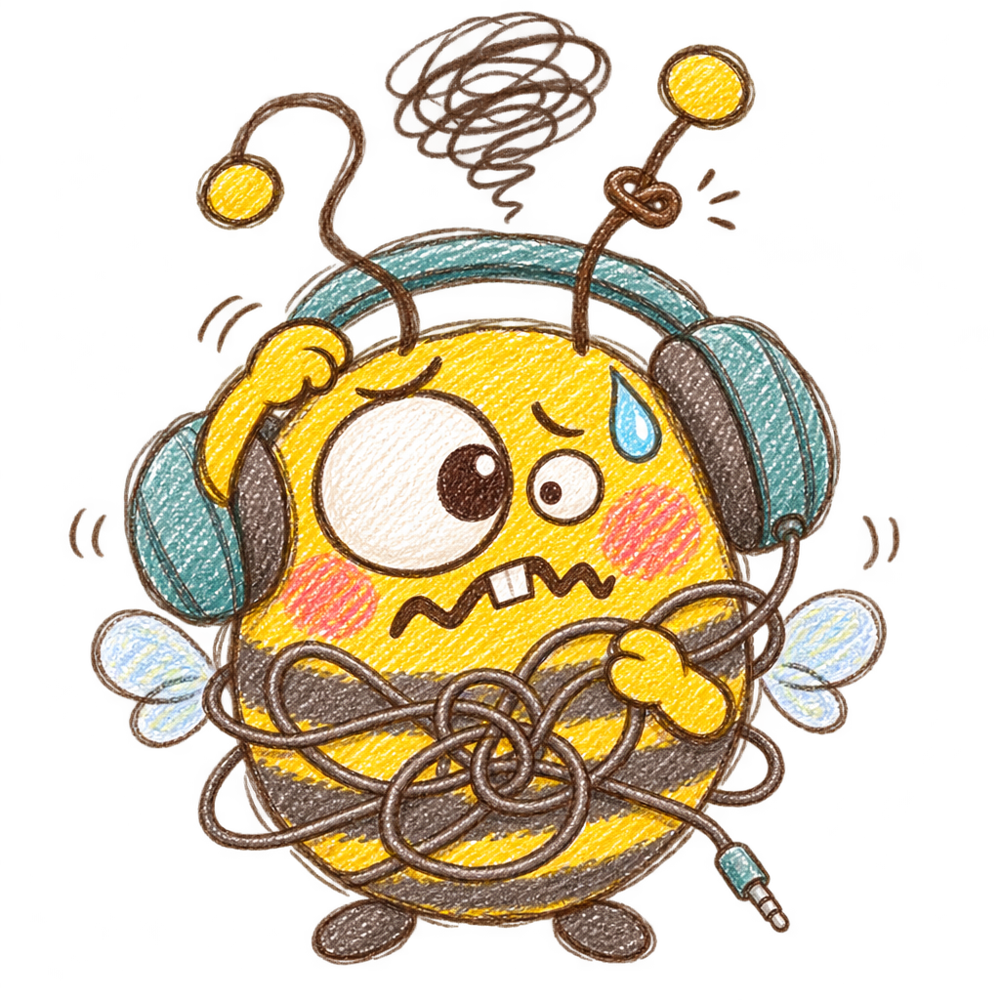

① 质感 + 悬停（本周页）
纸更像一本真本子：两页的左右外缘各露出一叠纸的厚度（细细的浅深条纹），纸边一圈很淡的暖色；皮面压纹更细更密、左上角一点反光，缝线是一道更细的双线，右下角压印 FEEBEE 字样。
鼠标移上去（图里黑色小签说明）：分隔页往外探 8pt、阴影加深；笔往上拔一点；时间线上那一场的标题划一道浅荧光笔；印章微微转正。全部 0.15 秒，减少动态效果时只有颜色变化。
FEEBEE
悬停：探出来
纪要文字记录10
20十一月
星期五待办
3
一16二17三18四19
五20六21日22
悬停：浅荧光笔
⌕ 翻翻看…⌘F
春季上新计划会
11月20日 周五 10:00 · 32 分钟 · 英语 → 中文 · 完整版纪要
摘要确定春季上新以亚麻系列为主推，拍摄定在 3 月 6 日，推广
预算上限 12 万。

悬停：印章转正
悬停：拔出一点
② 待办页更丰富
我的：逾期那条前面盖一个歪歪的红章「逾期」（不再只靠红字）；做完的划一道手抖的铅笔线；星标是手画的星。别人的：按人分组，每组开头是那个人的头像贴纸 + 名字 + 「3 条」，像在手帐里贴了一张人像贴纸。左页不变（七天格 + 菲比 + 搜索）。
我的3别人的3
待办
没做完 3 · 逾期 1 · 本周到期 1
周一
23
周二
24
周三
25
周四
26
周五
27
周六
28
周日
29

⌕ 在待办里找…
我的待办 按会议 · 按人 · ＋ 加一条
逾期
逾期色卡发给工厂确认 · 你3 天面料供应商周会☆
今天
改版手机端尺码表，给大家看 · 你今天春季上新计划会★
没有截止日
约摄影师看样衣产品发布日期确认☆
做完了
确认三家面料的报价面料供应商周会☆
约摄影师手记☆
「别人的」这一页长这样：
 Mia1 条
Mia1 条 周五前确定影棚 ▸ 进行中
Ben1 条
催样品发票
③ 十一月页 + 更早页
十一月：月历每天的圆按开会多少填色（越多越深的红），一眼看出哪几天忙；下面的会议按周分组，每组前面一行红铅笔小字「第 47 周 · 3 场」。
更早：每个月是一个牛皮纸文件夹，夹舌写「2026年10月 · 6 场」，展开的那个里面列前几场的标题，其余收着只露夹舌；点夹舌展开 / 收起。
十一月2026 年
9 场会议待办
3
一二三四五六日
1
2345678
9101112131415
16171819202122
23242526272829
30
第 48 周 · 3 场
第 47 周 · 3 场
更早十一月以前
14 场会议
2026年10月 · 6 场
春季面料打样复盘 · 10月30日
直播脚本对稿 · 10月24日
秋冬清仓排期 · 10月17日
… 还有 3 场 ›
⌕ 翻翻看…⌘F
还有这几处排版和补齐（不另出样稿，按前几轮已定的样子做）
· 文字记录页眉一排说话人和纸胶带，点一下只看这个人
· 新议题、新要点出现时「按上去」0.2 秒
· 设置左边红铅笔编号、版本行「检查更新」、诊断分隔页、同传英文换词
· 菜单栏面板的旧胶囊菜单换成纸上的写法
· 全角标点后的空隙收紧（「你好，我是菲比」不再隔一大格）
· 搜索、播放跟随、跳到出处后，字停在横线上
· 长标题换行、英文界面不挤
· 清掉剩下的细线、旧代码；没截过图的状态逐个看